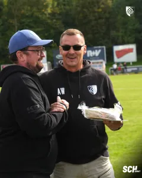
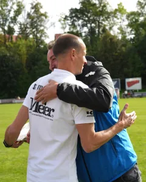
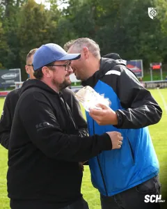
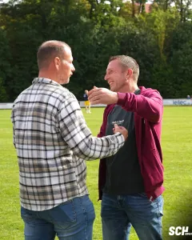

Drei Jubiläen im September: Besondere Ehrungen im Gesundbrunnen
Nicht nur auf dem Rasen gab es am Wochenende Grund zur Freude. In der Halbzeitpause des Verbandsligaspiels nutzten wir die Gelegenheit, drei Menschen aus unserem Verein zu ehren, die im September einen besonderen Anlass feiern konnten.
Seit 25 Jahren ein Teil des Vereins
Ein besonderes Jubiläum feiert Daniel Papst. Der Trainer unserer zweiten Mannschaft gehört seit mittlerweile 25 Jahren dem Verein an. Ein Vierteljahrhundert in Blau-Weiß ist eine lange Zeit, in der Daniel unseren Verein auf unterschiedliche Weise begleitet und mitgeprägt hat. Heute trägt er als Trainer unserer Kreisoberliga-Mannschaft Verantwortung und gibt seine Erfahrung an seine Spieler weiter.
Dafür sagen wir: Danke, Daniel!
Zwei runde Geburtstage
Gleich zweimal gab es im September außerdem zu einem ganz besonderen Geburtstag zu gratulieren. Carmine Periello und Andreas Wolf feierten jeweils ihren 50. Geburtstag.
Auch diesen Anlass wollten wir nicht einfach verstreichen lassen. Beide wurden deshalb in der Halbzeitpause vor den Zuschauern im Gesundbrunnen beglückwünscht und für ihren runden Geburtstag geehrt. Denn hinter einem Verein stehen Menschen, die ihn über viele Jahre begleiten, unterstützen und mit Leben füllen.
Herzlichen Glückwunsch von der gesamten Vereinsfamilie
Wir gratulieren euch drei von Herzen und wünschen euch weiterhin alles Gute, Gesundheit und noch viele gemeinsame Jahre und schöne Momente im Gesundbrunnen.
Schön, dass ihr ein Teil unserer blau-weißen Familie seid!




Quelle: www.sc1911-heiligenstadt.de · Stand 06.10.2026